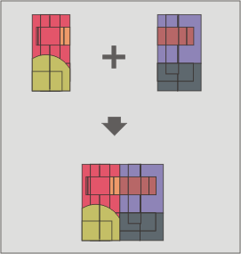

Unione (merge)
Questo geoprocesso agisce su più layer dello stesso tipo di geometria. Il layer risultante conterrà tutti gli elementi dei layer di input e avrà lo schema alfanumerico degli attributi del layer di input prescelto dall'utente. Dei rimanenti layer saranno conservati solo gli attributi il cui nome e tipo coincidono con quelli del layer di input del quale sarà utilizzato lo schema.

Questo geoprocesso è utile, ad esempio, quando occorre unire una serie di cartografie suddivise in fogli e si desidera unire il contenuto di vari fogli adiacenti in un unico layer. E' questo il caso della cartografia aerofotogrammetrica di produzione regionale.